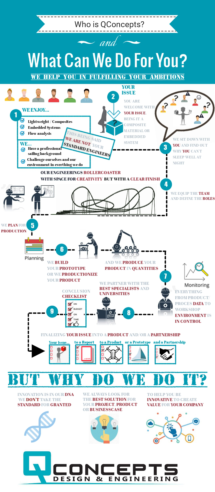
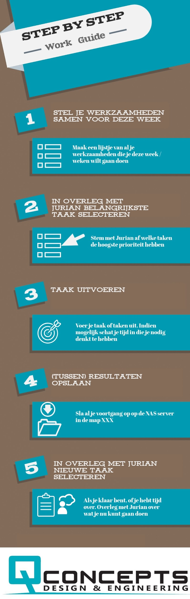
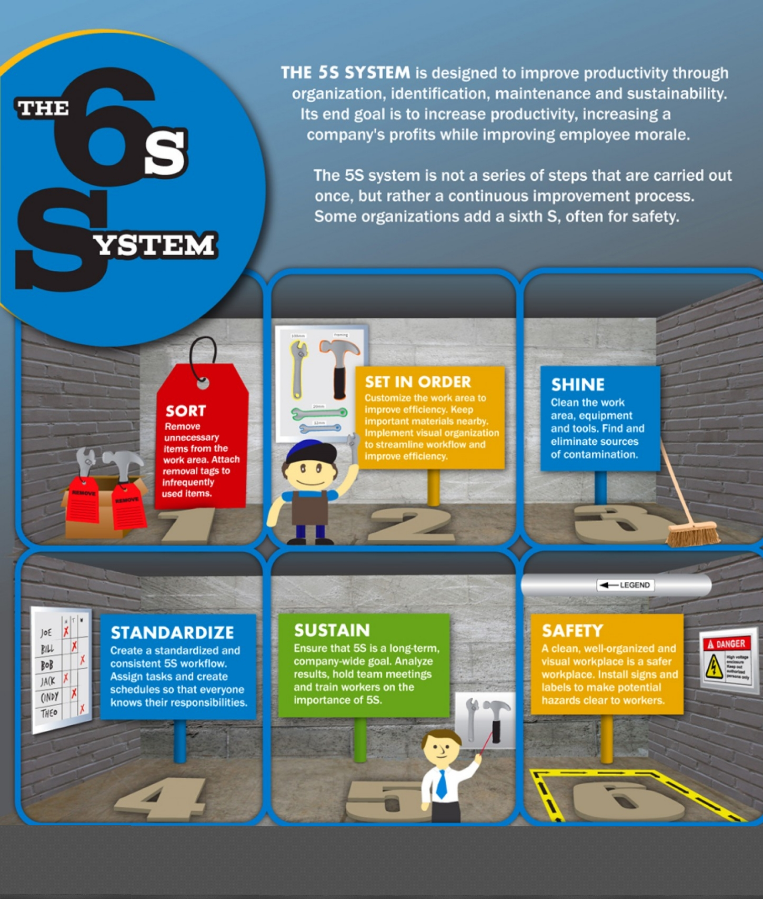
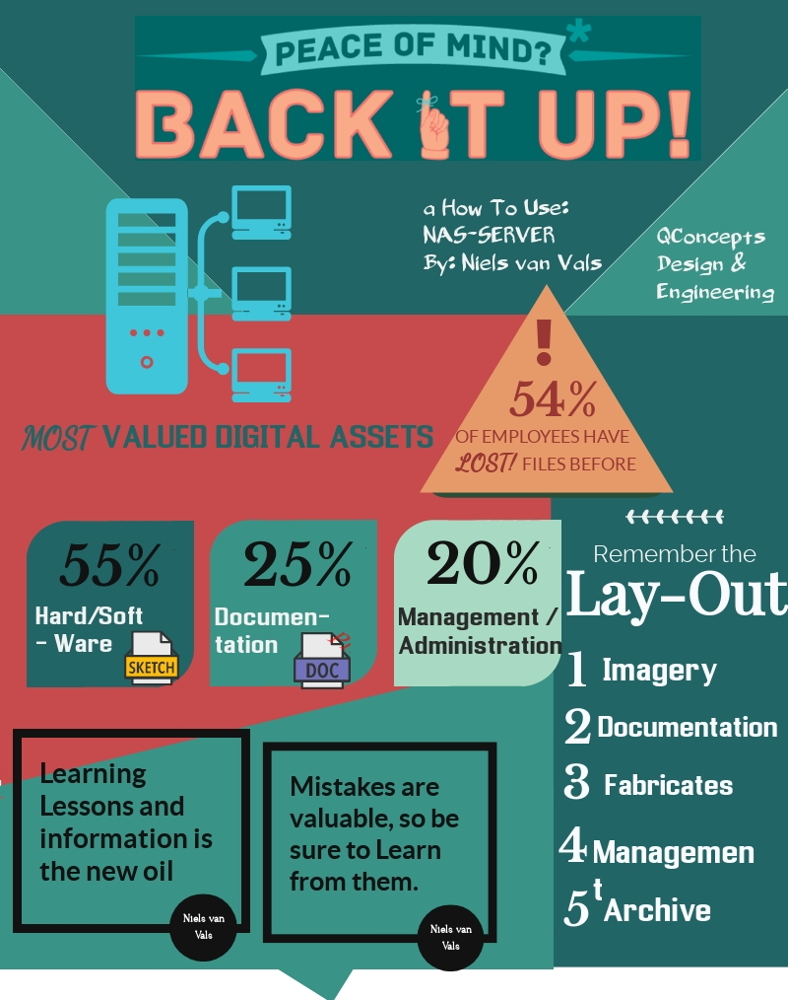

Wij hebben op gebied van standaardisatie en processen in kaart brengen en optimaliseren het Product Realisation Process opgeleverd. Feedback die wij hiervan kregen vanuit het bedrijf is dat het wellicht lastig toepasbaar is voor dagelijkse praktijken. Wij hebben daarom besloten om naast het Product Realisation Process (proces niveaus 2 & 3) ook een proces niveau 1 te creëren. Dit hebben wij gedaan in de vorm van posters / infographics. Wij hebben in totaal 3 voltooide posters ontwerpen, en 1 concept poster.
De eerste poster heeft betrekking op het sales process en is bedoeld om bijvoorbeeld een banner van te maken, of aan klanten te tonen. Het is een process dat laat zien wie QConcepts is, waar het voor staat (normen en waarden) en hoe het waarde toevoegt (wat doen ze?)
Deze poster ziet er als volgt uit:

De volgende poster is een poster die specifiek ontworpen is voor een medewerker. Deze medewerker zit in een speciaal traject en er wordt veel ondersteuning aan hem geboden. Het doel van deze poster is om hem mee te betrekken bij het proces en om meer informatie te delen met Jurian Rademaker. Deze medewerker is als het ware een ‘’black box’’. Er gaat een opdracht in en er komt een resultaat uit. Er is echter geen grip op planning, tijdsindeling, tussen resultaten etc. Vandaar dat deze poster is ontworpen.

Jurian Rademaker had
aangekaart dat hij meer orde wilt hebben in de werkplaats.
Medewerkers moeten de werkplaats schoon en netjes houden. Hiervoor is
geen originele poster gemaakt, maar is de vrijwel standaard 6s poster
gebruikt en is deze aangepast op QConcepts. Dit is dus geen
zelfgemaakt poster in tegenstelling tot de rest van de posters maar
een bewerking van een al bestaande poster. Toch vinden wij het
vermelden hiervan waard om aan te tonen dat wij rekening hebben
gehouden met alle wensen vanuit QConcepts.

Dan is er nog een ‘’concept’’ poster. De inhoud van de poster is wel af, echter de vormgeving (kleurencombinatie) was nog niet goed genoeg voor Jurian Rademaker. Echter was hier helaas geen tijd voor, wat niet erg is gezien deze poster niet kritisch was in tegenstelling tot bovenstaande drie posters.
